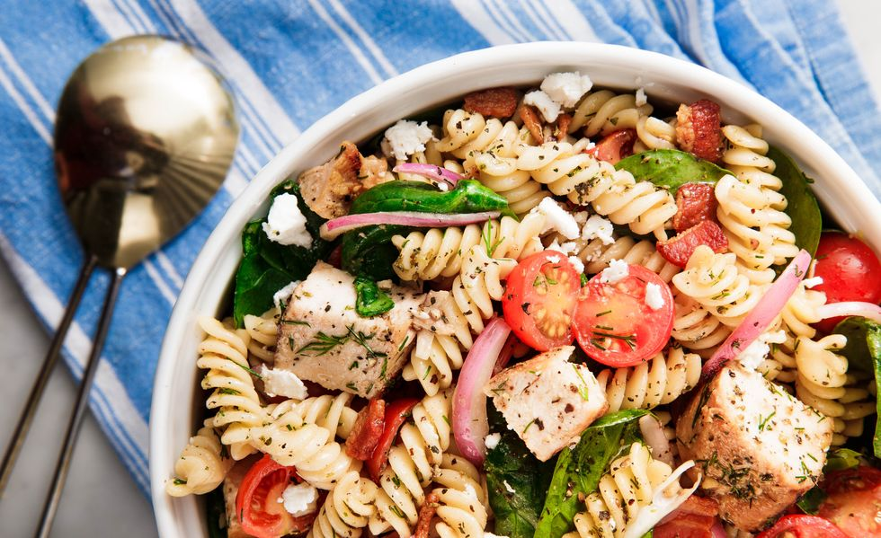

Chicken Pasta Salad

Description
This super savory pasta salad is a
hit at barbecues and potlucks, and hearty
enough to qualify as a meal. (In fact, it's kind of
meal prep gold!) Swapping in a tangy mustard vinaigrette
for the usual mayo-based dressing lightens things
up a bit, and a healthy serving of seared chicken
and crispy bacon make it satisfying enough to be a
meal all on its own.
Ingredients
For Salad
- 1lb. fusili pasta
- 1lb. boneless skinless chicken breasts
- 1tsp. garlic powder
- salt
- freshly ground black pepper
- 1tbsp. extra-virgin olive oil
- 4 slices bacon
- 2 cups tomatoes
- 2 cups spinach
- 1/2 cup crumbled feta
- 1/4 red onion, thinly sliced
- 2tbsp. freshly chopped dill
For Dressing
- 1/4 cup extra-virgin olive oil
- 3 tbsp. red wine vinegar
- 1/2 tsp. italian dressing
- 1 clove garlic
- 1 tbsp. dijon mustard
- salt
- freshly ground black pepper
Steps
- In a large pot of salted boiling water, cook
fusili according to package directions until al
dente. Drain and transfer to large bowl.
- Season chicken breasts with garlic powder,
salt, and pepper. In a large skillet over medium
heat, heat oil. Cook chicken until golden
and cooked through, 8 minutes per side. Let
rest 10 minutes, then cut into 1" pieces
- Meanwhile, make dressing: In a medium bowl,
whisk together oil, vinegar, Italian seasoning,
garlic, and mustard. Season with salt and pepper.
- In the large bowl with the pasta, toss
together all remaining ingredients. Pour
dressing over salad, toss until coated, and
serve.